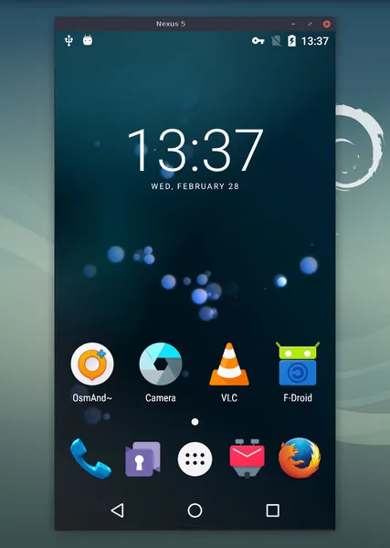
scrcpy
让屏幕或触控不便的旧 Android 设备继续由电脑操作。
当前显示第 1–30 条；使用筛选时会加载该分类的全部分页。

让屏幕或触控不便的旧 Android 设备继续由电脑操作。
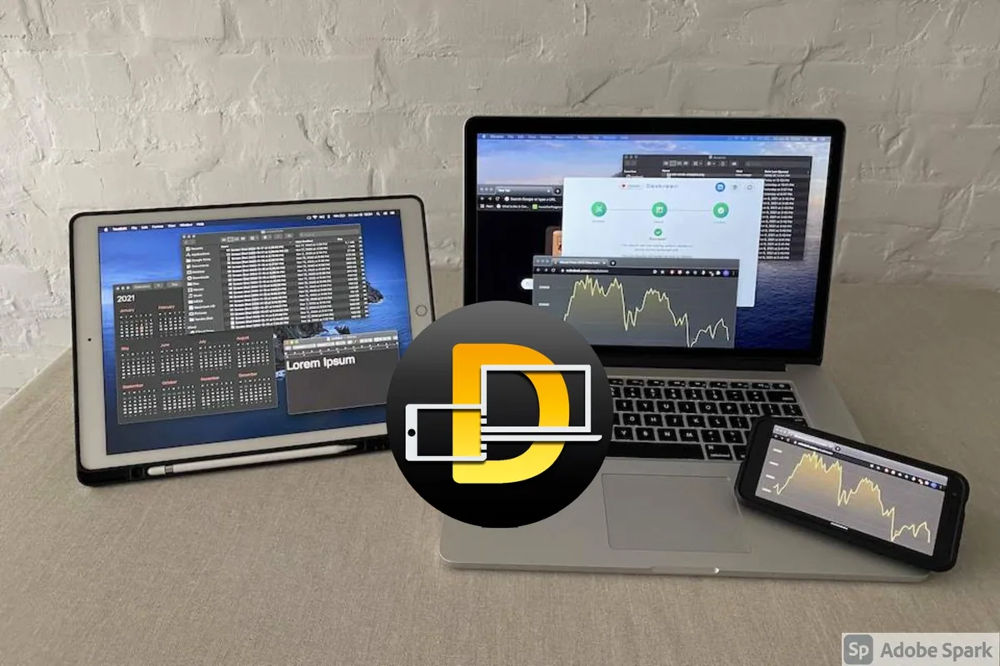
用浏览器接收桌面共享，让旧平板成为辅助显示终端。
评估把旧 Android 平板变成带语音的家庭控制面板。
 备用图
备用图将闲置手机作为电脑视频输入设备。
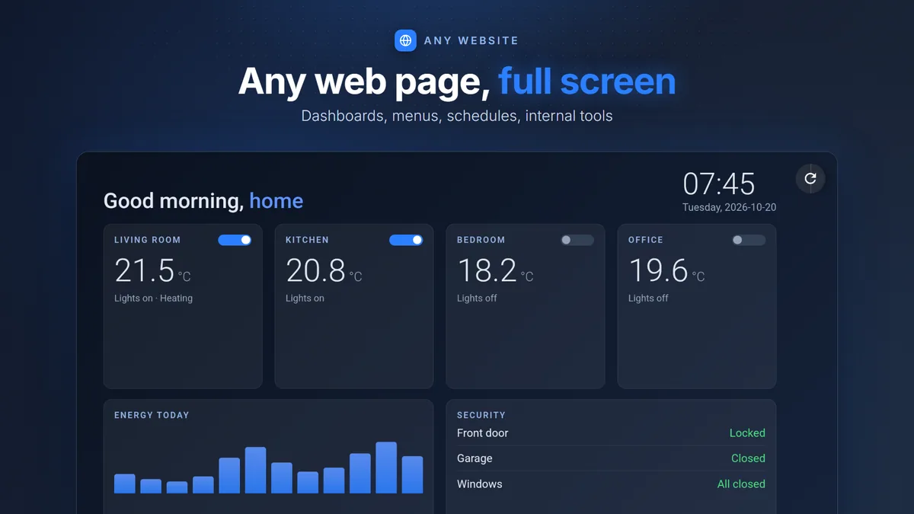
把闲置 Android 设备锁定为单用途展示或操作终端。
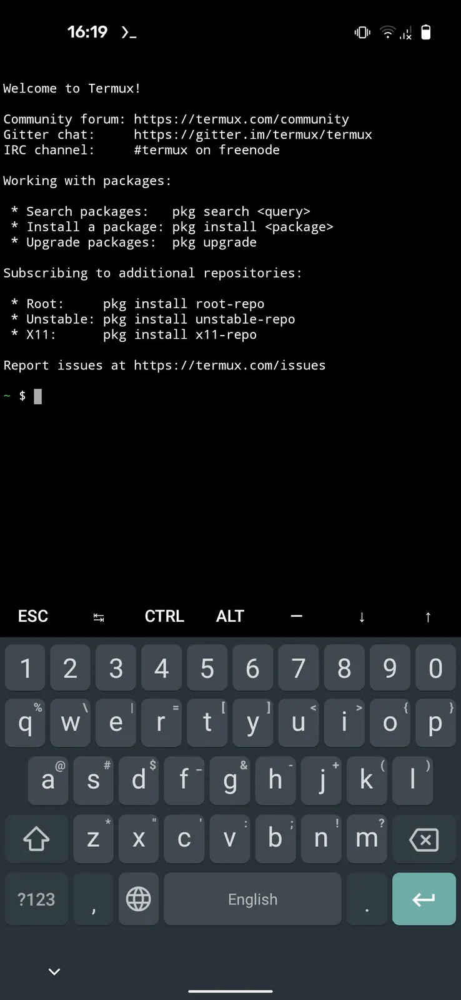
无需替换系统，在闲置 Android 上运行命令行与轻量服务。
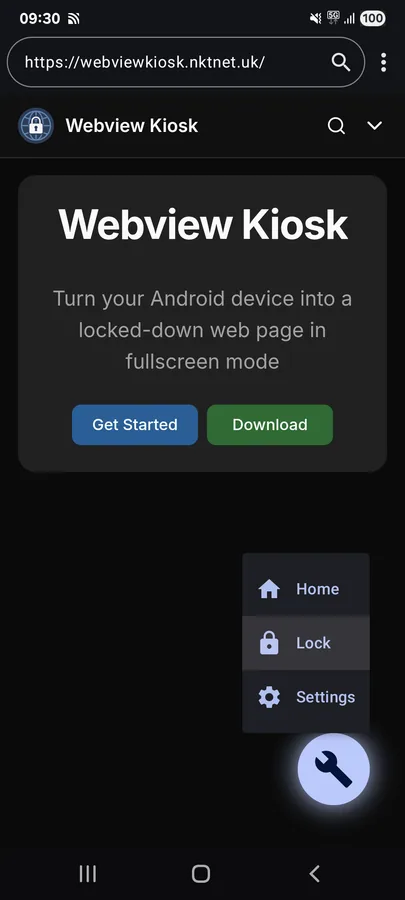
把闲置手机或平板用作固定网页面板。

作者在 Instructables 发布完整步骤，并称在多台 Motorola、Pixel 和 Fire Tablet 上测试。

评估把闲置手机或平板用作 Home Assistant 面板。
备用图评估把旧 Android 设备用作轻量 Linux 主机。

多个社区帖子记录用旧 Android 平板、Kiosk 浏览器或二手触屏设备展示 Home Assistant 仪表板。
备用图为官方停止更新的部分 Android 手机和平板提供替代系统。
备用图调查把闲置手机用作桌面计算终端的路径。
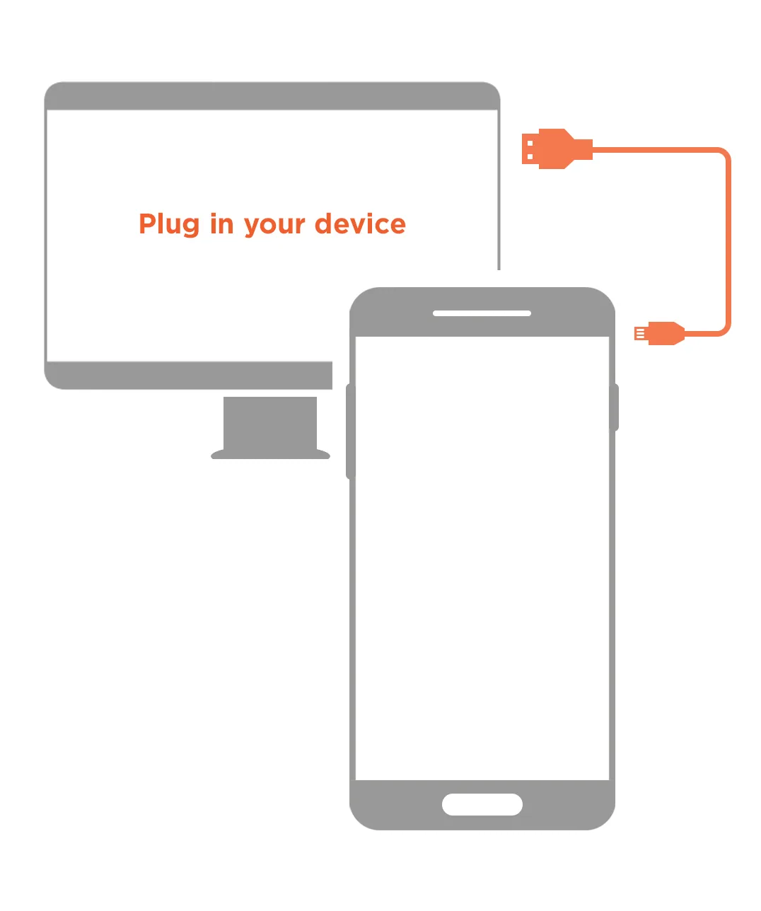
通过官方安装器为支持的手机安装 Ubuntu Touch。
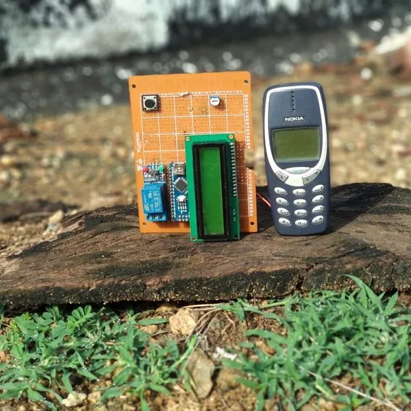
作者从旧 Nokia 类手机振动电机焊点读取来电/短信触发，再由 Arduino 和继电器切换外部负载。
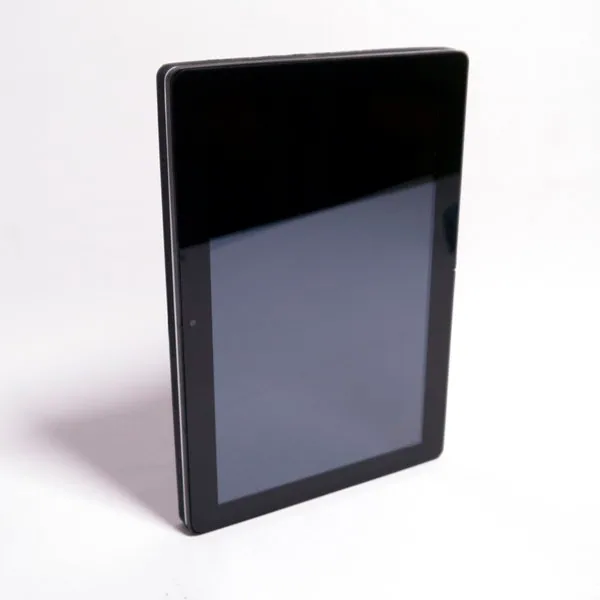
项目提出开放的机械与电气模块标准，让平板的主板、屏幕、电池和外设可升级并跨机型复用。
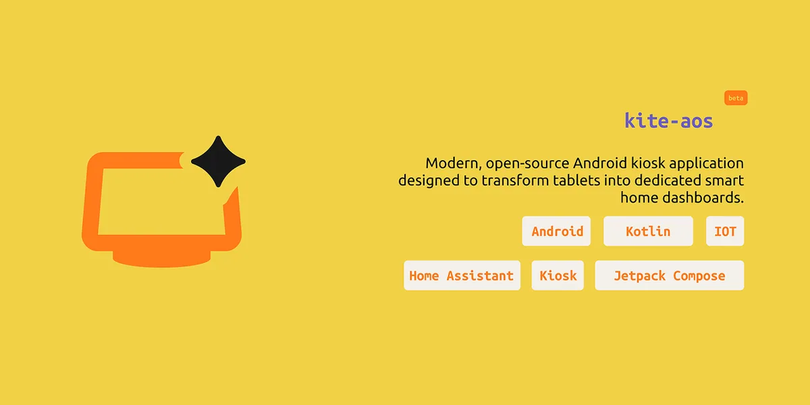
评估把闲置 Android 平板作为智能家居面板。
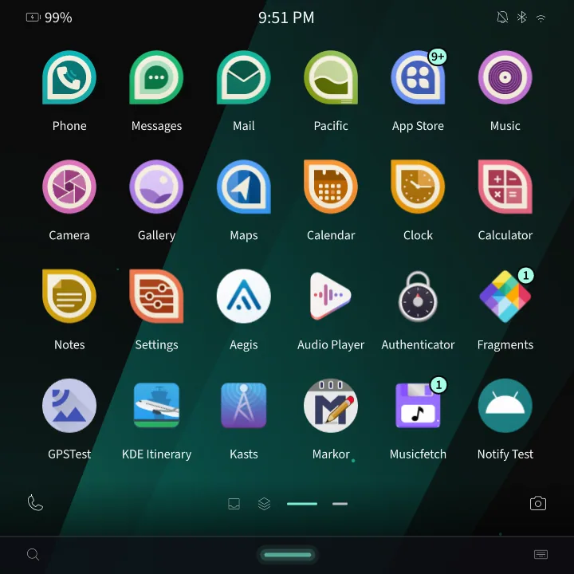
评估为列出的移动设备或板卡提供替代移动界面。
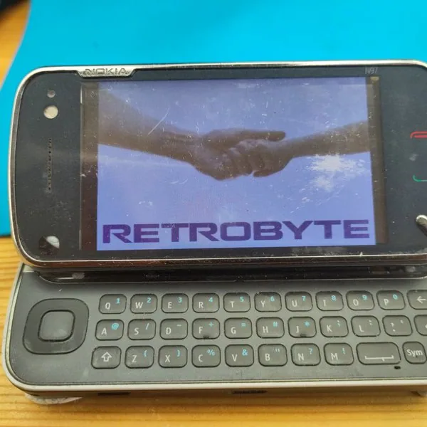
作者逆向 N97 键盘矩阵、FPC 和四线电阻触摸，计划用 Zero 形态 SBC、定制 PCB 与 3.2 英寸 HDMI 屏重建 Linux 掌机。
备用图项目为旧 Android 手机设计 3D 打印外壳、弹簧针 PCB、USB 2.0 和可换电池模块，已上传多份结构与 Gerber 文件。
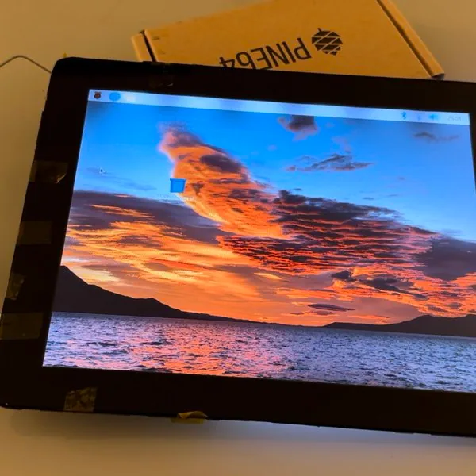
作者为 2010 年 iPad 设计 CM4 替换主板，目标复用外壳、电池、触摸、LCD、天线、扬声器和按键，并记录可启动系统。
备用图目标是让 Casio G'zOne CA201L 脱离原厂停更系统，尝试启动 postmarketOS，作为 Linux 终端、测试机或专用控制设备。
备用图目标是让 Casper Via F1 脱离原厂停更系统，尝试启动 postmarketOS，作为 Linux 终端、测试机或专用控制设备。
备用图目标是让 Cat S22 Flip 脱离原厂停更系统，尝试启动 postmarketOS，作为 Linux 终端、测试机或专用控制设备。
备用图目标是让 CHUWI Hi10 Plus 脱离原厂停更系统，尝试启动 postmarketOS，作为 Linux 终端、测试机或专用控制设备。
备用图目标是让 CMF by Nothing Phone 1 脱离原厂停更系统，尝试启动 postmarketOS，作为 Linux 终端、测试机或专用控制设备。
备用图目标是让 Coolpad Modena 2 脱离原厂停更系统，尝试启动 postmarketOS，作为 Linux 终端、测试机或专用控制设备。
备用图目标是让 Coolpad Y80D 脱离原厂停更系统，尝试启动 postmarketOS，作为 Linux 终端、测试机或专用控制设备。
备用图目标是让 CTL Chromebook Tablet Tx1 脱离原厂停更系统，尝试启动 postmarketOS，作为 Linux 终端、测试机或专用控制设备。
备用图项目资料不以 GitHub 为中心；下载入口目前跳转到 Nura，设备资料和代码仍分布在 Wiki 与 GitLab。
减少一个筛选条件，或换一个设备/型号词。